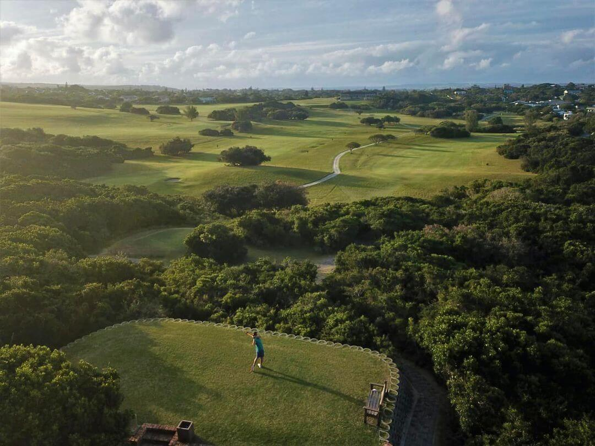

<div class="page-padding">
  <div class="container-large">
    <div class="w-layout-grid home-attractions_component">
      <div class="home-attractions_content">
        <div class="margin-bottom margin-small">
          <h2>Nearby Attractions</h2>
        </div>
        <div class="w-richtext">
          <p>Besides enjoying the breathtaking views and beach, you can also find the following nearby
            attractions:</p>
          <ul role="list">
            <li>We are situated +- 3km from the Kowie River mouth and the centre of Port Alfred.</li>
            <li>Royal Port Alfred Golf course</li>
            <li>In the surrounding areas: boat hire, rock &amp; surf, river and deep sea fishing, scuba
              diving, hiking, horse riding, shopping facilities and many restaurants are offered.</li>
            <li>Local bird guide Anne Williams has twelve year’s guiding experience and FGASA accredited.</li>
            <li>We are in the heart of the Sunshine Coast and Settler Country, with Grahamstown, Bathurst,
              Kenton-on-Sea and Kleinemond nearby.</li>
            <li>Malaria-free game parks: Addo Elephant Park, Kariega, Pumba, Kwandwe, Sibuya, Kichaka,
              Shamwari and Lalibela.</li>
          </ul>
        </div>
      </div>
      <div id="w-node-f4de3847-1b0b-d4a5-21e7-f0db5111ae0a-67cf3725"
           class="home-attractions_image-wrapper">
        
      </div>
    </div>
  </div>
</div>
